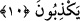

(Âl-i İmrân, 3/14) Hakîkatte kendi kendisini aldattığı halde Allah’ı ve mü’minleri
aldattığını sanır. Nitekim Allah Teâlâ bu konuda: “Şüphesiz münâfıklar Allah’ı
kandırmaya kalkışıyorlar; halbuki O, onların aldatmalarını kendilerine çevirir.”
(en-Nisâ, 4/142) buyurmaktadır. Binâenaleyh onlar şeklen Allah’ı ve mü’minleri aldatır
gibi olsalar da gerçekte kendilerini aldatırlar. Çünkü onlar Allah’ı aldatmaya
girişmeden önce de, îmân etmeleri mümkün olduğu halde, küfrü tercîh etmeleri
sebebiyle cehennemi haketmişlerdi. Fakat hîle yoluna baş vurup nifâklarını ortaya
koymaya başladıklarında cehennemin en alt tabakasına gidecek bir gurup oldular ve
artık bir daha îmân edebilme isti’dâdlarını kaybettiler. Böylece hîle ve tuzaklarının
kötülüğü kendilerine dönmüş oldu. Her ne kadar hîle ve aldatmaları kaderin bir netîcesi
ise de onlar, ezelî kader sırrı hakkında bir bilgiye sâhib değillerdir. Çünkü kalblerinde
hastalık vardır. Hasta kalbler ise kader sırrını anlamaktan uzaktır.
10. Onların kalblerinde bir hastalık vardır. Allah da onların hastalığını
çoğaltmıştır. Söylemekte oldukları yalanlar sebebiyle de onlar için elîm bir azâb
vardır.
Hastalık (maraz), bedene ârız olan, onu normal durumundan çıkaran, faaliyetlerini
yerine getirmekten alıkoyan ve ölümüne sebeb olan bir keyfiyettir. Mecâzî olarak nefsin
kemâlini zedeleyen cehâlet, yanlış akîde, hased, kin, günah işleme arzusu ve benzeri
kötülükler, insanı rûhânî yönden helâke sürükleyen küfür yolları için kullanılır. Çünkü
bu hastalıklar, fazîletli işler yapmaya mâni olup, hakîkî olan ebedî hayatı perişan
ederler. Âyet-i kerîme bu mânâyı taşımaktadır. Zira onların kalbleri kaybettikleri riyâset
ateşiyle yanmakta ve Peygamber Efendimizin ortaya koyduğu dâ’vânın yükselip günden
güne gelişmesine hased etmektedirler.
Allah Teâlâ Peygamberinin işini yüceltmek ve dâvâsını başarıya ulaştırmak sûretiyle
onların üzüntülerini artırdı. Onların nefisleri küfür, yanlış inanç ve Peygamber (s.a.)’e
düşmanlıkları sebebiyle mahvolmuştur. Allah Teâlâ onlara öğüt ve korkutmanın tesir
etmeyeceğini bildiği için kalblerini mühürlemek, günden güne şer’i teklîfleri çoğaltmak,
tekrâr tekrâr vahiy göndermek ve mü’minlere olan ilâhî yardımı kat kat ziyâdeleştirmek
sûretiyle onların bu felâketlerini artırmıştır. Çünkü şer’î teklîfler çoğalınca
münâfıkların küfürleri de artmaktaydı. Onlara şehâdet kelimesini söylemek dahi,
oldukça zor gelmekteydi. Günden güne artan ibâdet ve tâatla ilgili teklîfleri yerine
getirmenin ne derece ağır olacağı açıktı. Ayrıca işlenen suçlar için belli cezâlar vardı.
Bütün bunlar münâfıkların ızdıraplarını ve şüphelerini çoğaltmakta ve âhırette
çekecekleri azâbın da artmasına sebeb olmaktaydı. Nitekim bu konuda Kur’ân-ı Kerîm